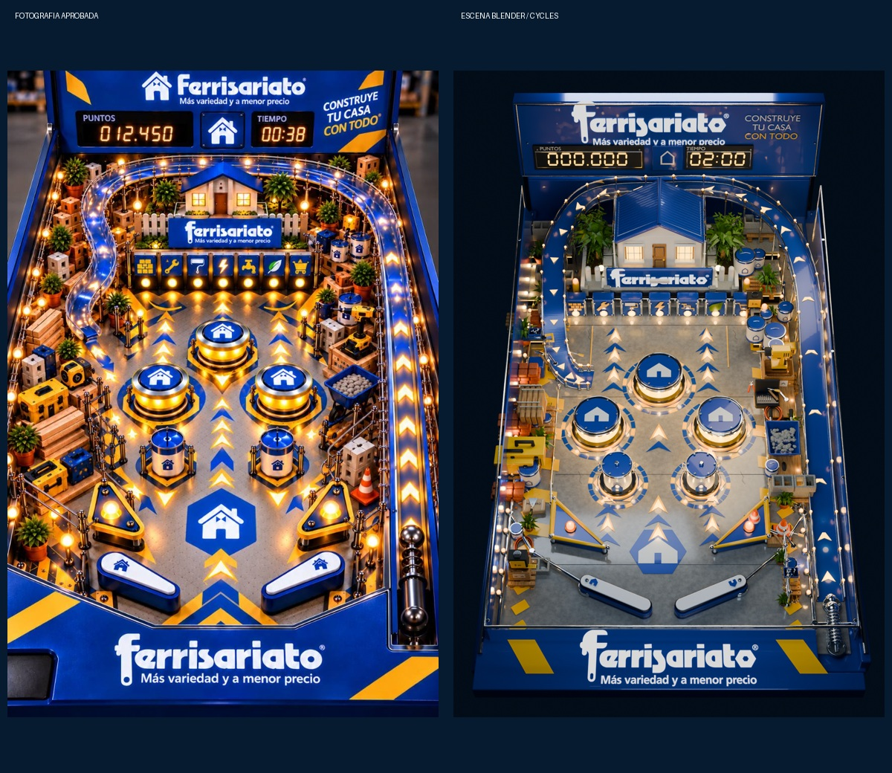
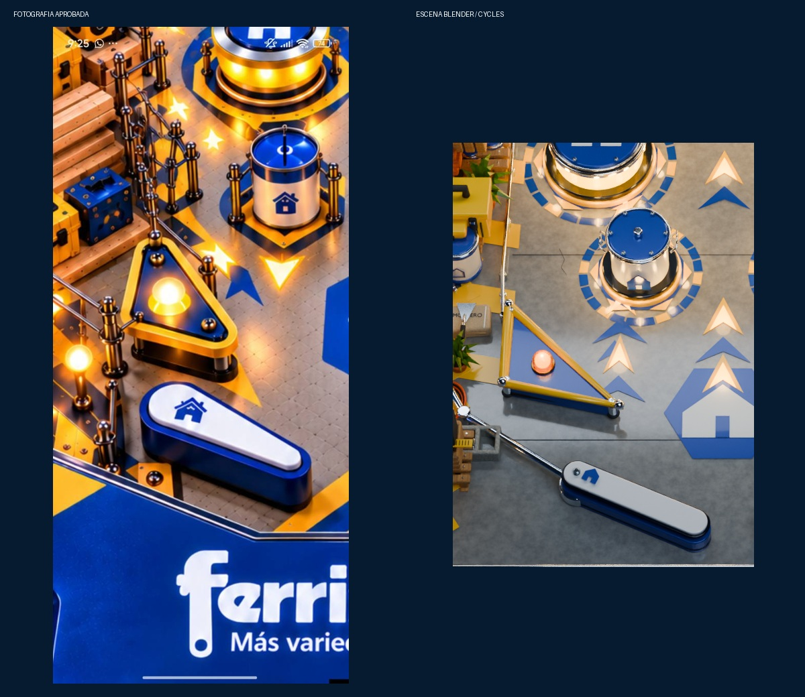
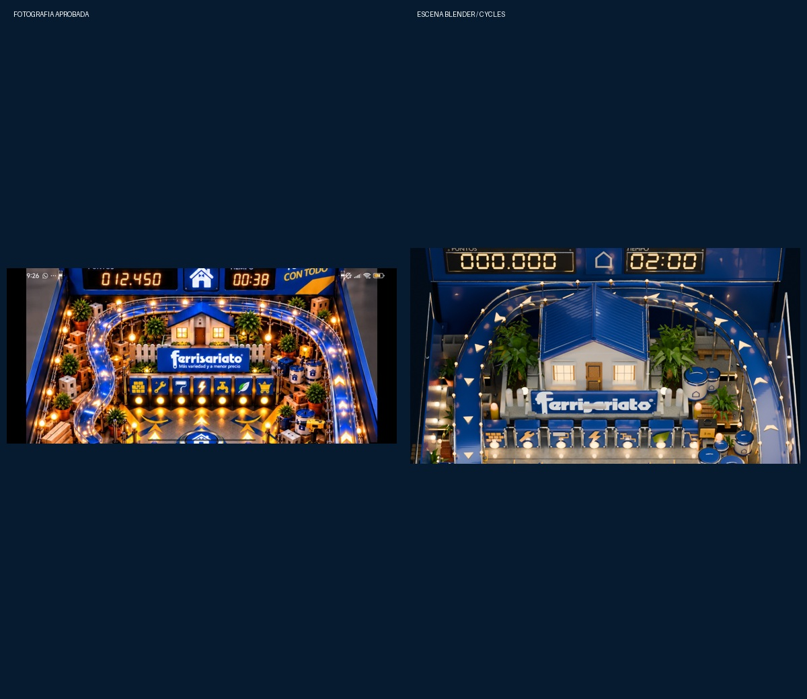
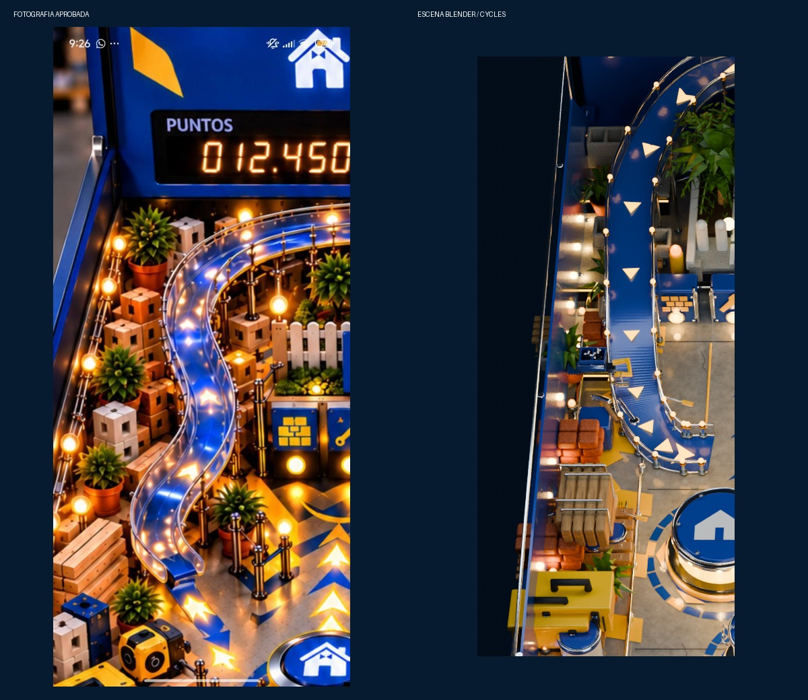
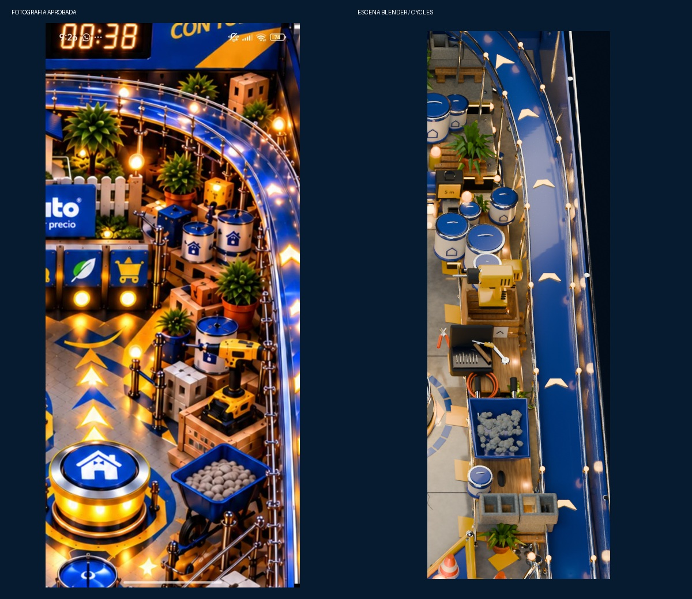

Ferrisariato · Revisión de precisión V4
Comparación con las cinco fotografías aprobadas. La escena usa un solo canal continuo, tablero inclinado 6,5°, cabezal integrado y proyección compartida con el juego.
GENERAL

FLIPPERS SLINGSHOT

CASA CANAL

DESCENSO IZQUIERDO

TERRAZA DERECHA

Iteraciones previas
Se corrigieron separación del cabezal, altura de la casa, colocación de piezas, vidrio, decoración en el recorrido y barandas incompatibles.
Pasada 1 · Pasada 2 · Pasada 3 · Pasada 4 ·